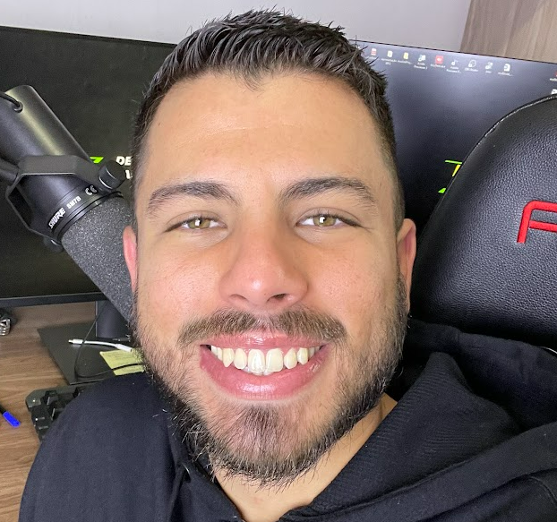

Raul Araujo
Desenvolvedor Android e Full Stack Web
Programando desde 2019
Resumo
Sou uma pessoa dedicada e esforçada.
Tenho 3 anos de experiência profissional em desenvolvimento nativo
para Android com Java e Kotlin e também sou desenvolvedor Full Stack Web.
Educação
-
Bacharelado em Sistemas de Informação
Universidade Eniac (2016-2019)
Experiência Profissional
-
Desenvolvedor Android Pleno - Nexmuv
Out 2022 - Maio 2023
- Consultoria para o aplicativo Pagvendas do PagSeguro.
- Desenvolvimento e Colaboração:
- Colaborei dentro de um framework ágil usando a metodologia Kanban, integrando habilidades como desenvolvedor Android em squads multifuncionais.
- Contribuí ativamente para o projeto, utilizando Kotlin como linguagem principal e Java para referências, em um contexto de iteração constante e entrega contínua em um ambiente de projeto modularizado.
- Desenvolvimento de Funcionalidades e UI/UX:
- Responsável pelo desenvolvimento de novas funcionalidades, implementação técnica de design UI/UX de acordo com a documentação do Figma e realização de testes automatizados.
- Ferramentas e Processos:
- Participação em reuniões diárias para priorizar tarefas, identificar bloqueios e manter a transparência do projeto.
- Utilizei o Jira no gerenciamento de projetos, analisando demandas, decompondo-as em sub-tasks detalhadas para um desenvolvimento iterativo e eficiente.
- Mantive uma comunicação clara e eficaz com as partes interessadas, atualizando regularmente o status das tarefas e me adaptando a mudanças nos requisitos e prioridades, mantendo um alto padrão de qualidade de código e soluções desenvolvidas.
-
Desenvolvedor Android Pleno - BRQ Digital Solutions
Out 2020 - Set 2021
- Consultoria para o aplicativo Itaú Empresas do Banco Itaú.
- Desenvolvimento e Colaboração:
- Colaborei dentro de um framework ágil usando a metodologia Kanban, integrando habilidades como desenvolvedor Android em squads multifuncionais.
- Contribuí ativamente para o projeto, utilizando Kotlin como linguagem principal e Java para referências, em um contexto de iteração constante e entrega contínua em um ambiente de projeto modularizado.
- Desenvolvimento de Funcionalidades e UI/UX:
- Responsável pelo desenvolvimento de novas funcionalidades, implementação técnica de design UI/UX de acordo com a documentação e realização de testes automatizados.
- Ferramentas e Processos:
- Utilizei o Jenkins para Integração Contínua e Entrega Contínua (CI/CD) para entrega eficiente do código.
- Participação em reuniões diárias para priorizar tarefas, identificar bloqueios e manter a transparência do projeto.
- Empreguei o Jira no gerenciamento de projetos, analisando demandas, decompondo-as em sub-tasks detalhadas para um desenvolvimento iterativo e eficiente.
- Mantive comunicação clara e eficaz com as partes interessadas, atualizando regularmente o status das tarefas e me adaptando a mudanças nos requisitos e prioridades, mantendo um alto padrão de qualidade de código e soluções desenvolvidas.
-
Desenvolvedor Android Júnior - CTC
Nov 2019 - Out 2020
- Consultoria para o aplicativo SISPLAN da Polícia Científica.
- Desenvolvimento e Colaboração:
- Colaborei dentro de uma estrutura de modelo de desenvolvimento em cascata, integrando habilidades como desenvolvedor Android em um time de dez colaboradores.
- Contribuí ativamente para o projeto, utilizando Java como linguagem principal e Kotlin após uma reconstrução do projeto, em um ambiente de constante iteração e entrega contínua.
- Desenvolvimento de Funcionalidades e UI/UX:
- Responsável pelo desenvolvimento de novas funcionalidades e implementação técnica de design UI/UX.
- Ferramentas e Processos:
- Utilizei o Google Sheets para gerenciamento de projeto, analisando demandas, dividindo-as em sub-tarefas detalhadas para um desenvolvimento iterativo e eficiente.
- Mantenho uma comunicação clara e eficaz com as partes interessadas, atualizando regularmente os status das tarefas e me adaptando a mudanças nos requisitos e prioridades.
-
Estágio em Desenvolvimento Android - Universidade Eniac
Jul 2019 - Set 2019
- Dediquei tempo para estudo teórico e prático no desenvolvimento nativo de aplicativos Android com Java.
- Criação e desenvolvimento de um aplicativo de minha autoria.
O objetivo do aplicativo era simular a média final dos alunos, auxiliando os universitários a ficarem mais conscientes de suas notas.
Habilidades
- Frontend
- Backend
- JavaScript
- Node.js
- Express.js
- React.js
- jQuery
- HTML
- CSS
- CSS Grid Layout
- CSS Flexbox
- Bootstrap
- JSON
- API REST
- Git e Git Flow
- Github e Gitlab
- SQL
- Clean Architecture
- Clean Code
- OOP
- SOLID
- Postman
- Jira
- Confluence
- Linux
- Bash
- Cloud
- CI/CD
- Jenkins
- Agile methodologies
- Kanban
- Firebase
- Authentication
- Firestore Database
- Cloud Messaging
- Android
- Android Jetpack
- Kotlin
- Java
- MVVM
- MVP
- SQLite
- Realm
- Retrofit
- Kotlin Coroutines
- Flow
- RxJava/RxAndroid
- Custom Views
- Activity Lifecycle
- Fragment Lifecycle
- Material Design
- Timber
- Animation
- WebView
- Google Play Billing Library
- Android Studio
- Gradle
- Proguard/R8
- Debugger
- Modularization
- Architecture Components
- ViewModel
- LiveData
- Room
- Navigation
- Data Binding
- Hilt
- Design Patterns
- DI (Dagger2, Hilt, Koin)
- State
- Observer
- Singleton
- Factory
- Adapter
- Unit and Instrumented test
- JUnit4
- MockK
- Mockito
- Espresso
- Kotlin test
- Basic knowledge in:
- C
- C++
- Python
- Springboot
- iOS
- Dart
- Flutter
- KMM
- Android Jetpack Compose